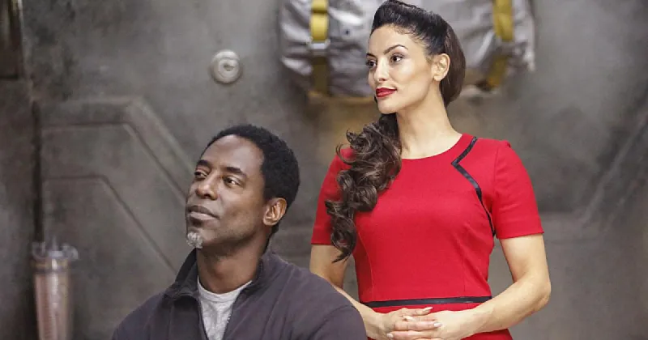
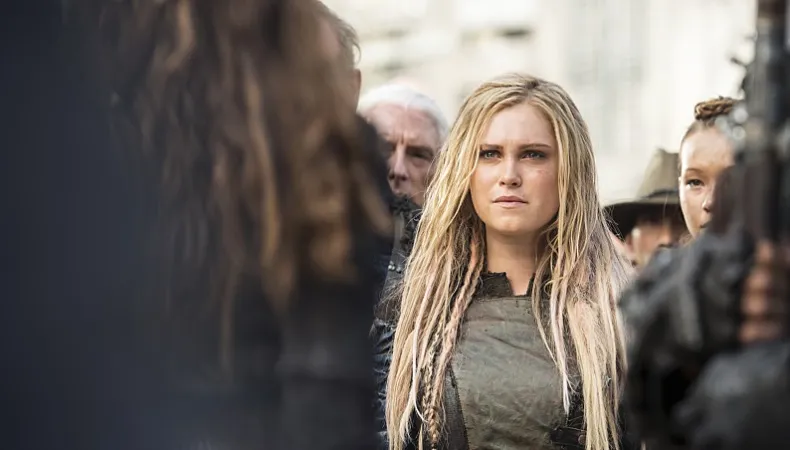

Temporada 3
"Los 100" Temporada 3 profundiza en la política de los clanes Grounder y los conflictos con Arkadia, presentando nuevos desafíos morales y decisiones difíciles que redefinen las alianzas. La llegada de la IA ALIE complica aún más la situación, empujando a todos hacia un inevitable conflicto que podría alterar el curso de la humanidad.
A medida que los secretos de la Ciudad de la Luz se desvelan, Clarke y sus amigos deben considerar los sacrificios necesarios para salvar a su gente y posiblemente al mundo entero.

